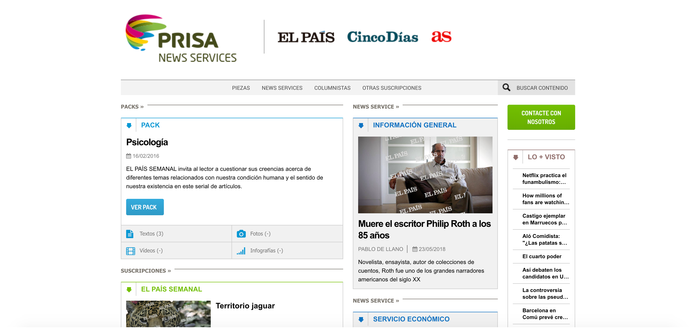
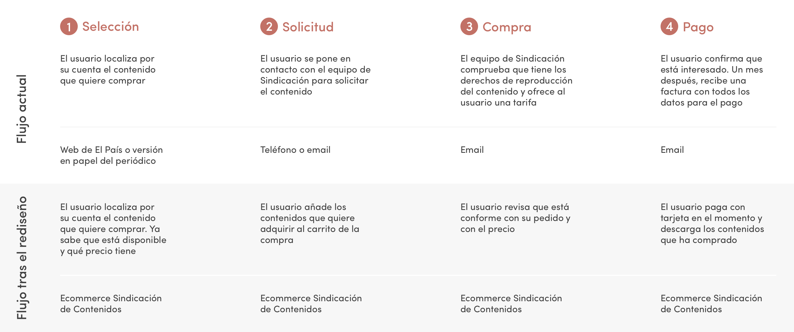
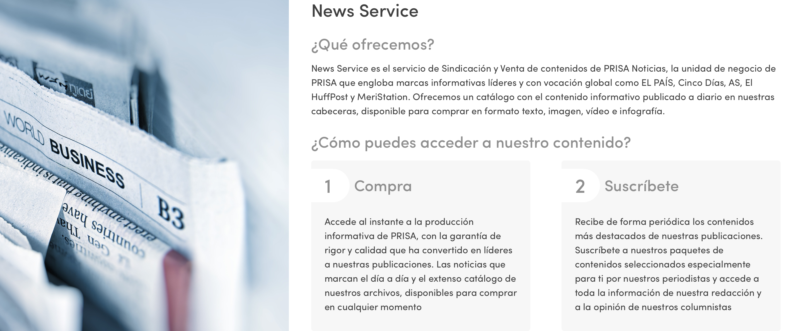

Datos básicos
Rol: Project manager
Tipo: UX
Herramientas: User research + Information architecture + Wireframing
Los medios de comunicación se encuentran en una encrucijada. La revolución digital les empuja a abrir nuevos caminos y a explorar modelos de negocio alternativos al de la publicidad. La sindicación de contenidos ha sido tradicionalmente un negocio residual para las grandes cabeceras. Pero si se adapta al entorno digital, puede convertirse en un nicho de mercado muy interesante para los periódicos, en un momento en el que necesitan diversificar sus fuentes de ingresos.
Cuando me ofrecieron incorporarme al equipo de Sindicación de Contenidos de El País, llevaba un año trabajando en el periódico y jamás había escuchado hablar de aquel término tan extraño. ¿Sindi… qué?
Tradicionalmente, las grandes cabeceras han revendido sus contenidos editoriales para que otros medios de comunicación u otras empresas puedan reutilizarlos, pero este ha sido siempre un modelo de negocio muy residual y totalmente apegado a la cultura del papel.
El País no era una excepción. El departamento de Sindicación facturaba varios cientos de miles de euros cada año y tenía acuerdos con prácticamente todas las grandes cabeceras de Latinoamérica, pero el servicio estaba anticuado y un poco descuidado. Comprar una foto para republicarla o suscribirse a uno de los paquetes de contenidos que se ofrecían era una experiencia analógica hasta decir basta: cualquier solicitud arrancaba con un email o llamada del usuario y el proceso de compra se demoraba varios días, con cadenas interminables de correos electrónicos que obligaban al usuario a esperar y esperar hasta que finalmente éramos capaces de cerrar la operación.
Rediseñar esta experiencia fue uno de mis principales objetivos durante mis tres años al frente del servicio de Sindicación. Queríamos simplificar el proceso y digitalizarlo por completo. Para eso, pusimos en marcha el proyecto de diseñar un ecommerce para la venta y sindicación de los contenidos editoriales del periódico. Como project manager, mi rol consistió en dos tareas:
01 Diseño UX + UX Writing
Definir las necesidades de los usuarios y del negocio, identificar los pain points en el proceso de compra, idear soluciones para atajar estos problemas, establecer los flujos de los usuarios, definir la arquitectura de la información y redactar los copys.
02 Coordinación
Junto con uno de mis compañeros, me encargué de coordinar y alinear el trabajo y los objetivos del equipo de desarrolladores, el diseñador y los diferentes departamentos internos involucrados en el proyecto (financiero, legal, tecnología…).
Una web anticuada y poco funcional
La compra de contenidos editoriales de El País se puede realizar de dos maneras diferentes. El usuario puede o bien acceder al catálogo de contenidos del periódico y comprar una pieza suelta (un reportaje, una foto, un vídeo…), o bien optar por suscribirse a uno de los paquetes de contenidos que se ofrecen en el servicio de sindicación. Estos paquetes funcionan como una especie de tarifa plana que le da al usuario derecho a recibir (y republicar) un número determinado de contenidos, especialmente seleccionados para él, por una tarifa fija mensual.
El servicio contaba ya con una web para dar soporte a ambas modalidades de compra. La función de esta web era doble: (1) servir como ecommerce para los usuarios que quisieran hacer compras puntuales; y (2) hacer las veces de plataforma de entrega de contenidos para que los usuarios suscriptores pudieran comprobar cada día qué contenidos estaban disponibles para su reutilización.
Sin embargo, la web estaba obsoleta, era muy poco atractiva visualmente y presentaba dos graves problemas a nivel funcional:
01 Compras imposibles
A pesar de que aparentemente se pueden comprar piezas sueltas en la web, es imposible hacerlo porque no hay pasarela de pago activada. El catálogo de consulta de contenidos disponibles para comprar tampoco es funcional: en teoría se puede adquirir cualquier tipología de contenido (texto, foto, vídeo e infografía), pero en realidad solo están disponibles los textos. Por un problema de conexión con el sistema editorial de El País, el contenido gráfico es imposible de cargar en el ecommerce para que los usuarios puedan consultarlo y decidir si lo quieren comprar.
02 Suscripciones confusas
Los usuarios suscriptores acceden a la web todos los días para ver qué contenido pueden reutilizar en sus periódicos. El problema es que no disponen de un espacio individual en el que puedan consultar toda la información relevante para ellos: contenidos disponibles, suscripciones activas, precio… En la web, todos los usuarios tienen acceso a todas las suscripciones que ofrece el servicio, con independencia de si las tienen contratadas o no. Esto genera un grave problema de confusión en el usuario, que no tiene claro lo que puede utilizar y lo que está restringido.
Comprar y suscribirse en pocos clics
El proyecto consistió en rediseñar la web de Sindicación con el objetivo de que fuera un ecommerce totalmente funcional para la compra de piezas editoriales y para que, además, funcionara como una plataforma de entrega de contenidos para los suscriptores, rápida y sencilla de utilizar.
Enfocamos el proceso en dos fases: identificar primero a los usuarios, sus necesidades y el flujo que debían seguir para después definir el producto de Sindicación, tanto a nivel conceptual como en el plano digital.
Dos tipos de user persona
El servicio tiene dos tipos de usuarios diferenciados: el suscriptor y el comprador ocasional. El primero suele ser un periodista o editor de un periódico tradicional, que tiene una relación contractual desde hace años con El País y que necesita consultar cada día qué contenidos puede reutilizar en su medio.
El perfil del comprador ocasional responde al empleado de una editorial (especialmente de materiales educativos) que necesita adquirir permisos de reproducción de contenidos editoriales para reproducirlos en un libro. Es habitual, por ejemplo, que en libro de enseñanza de español se utilicen textos de periódicos como apoyo a las lecciones teóricas o a los ejercicios. El flujo de este usuario es el que generaba más problemas y el que necesitaba un rediseño urgente:
Este rediseño mejora notablemente la experiencia del usuario, pues se reducen los pasos necesarios para comprar el producto y los tiempos de espera: lo que antes podía demorarse un mes ahora se puede realizar en cuestión de minutos.
Además, el usuario tiene toda la información clave en todo momento. Desde que entra en el ecommerce, sabe (1) que todos los contenidos están disponibles para la compra (si lo busca en la web de El País no tiene esa certeza, pues por una cuestión de propiedad intelectual no todo lo que se publica en el periódico se puede ceder a terceros); y (2) el precio de esos contenidos (en el flujo actual, el usuario primero tiene que solicitar el contenido y solo después se le ofrece una tarifa).
Un nuevo nombre y una nueva estructura
¿Para redefinir el producto a nivel conceptual comenzamos por el branding. Sindicación de Contenidos paso a llamarse News Service. Y definimos una estructura de servicios mucho más clara y explicativa para que los usuarios entendieran qué podían comprar y cómo hacerlo.
¿Y el visual?
El proyecto se encuentra actualmente en fase de puesta en producción, por lo que todavía no es posible mostrar el aspecto visual que tendrá la nueva web.